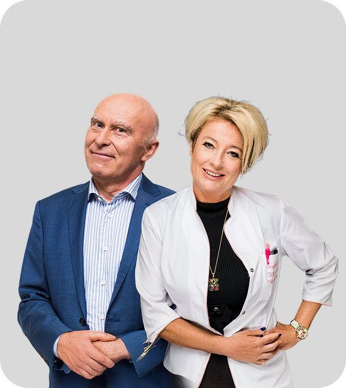

Stworzyliśmy serię wiosennych wydarzeń dla lekarzy POZ.
Wiedza od najlepszych praktyków.
Maj–czerwiec 2026 · 4 konferencje online
Jeden zapis, pewne miejsce
na wszystkich konferencjach.

21.05.2026
Dermatologia i alergologia
prof. nadzw. dr n. med. Irena Walecka
prof. dr hab. n. med. Henryk Mazurek
27.05.2026
Pediatria
prof. dr hab. n. med. Ernest Kuchar
02.06.2026
Medycyna rodzinna
dr n. med. Aleksander Biesiada
10.06.2026
Psychiatria, neurologia, ból
dr hab. n. med. Marcin Siwek, prof. UJ
Co konkretnie omówimy
Partnerzy serii